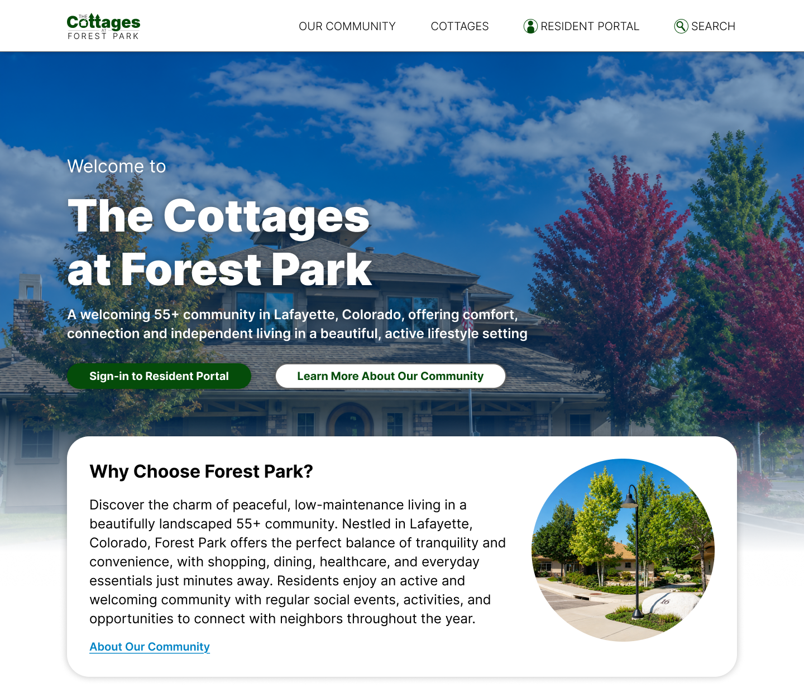
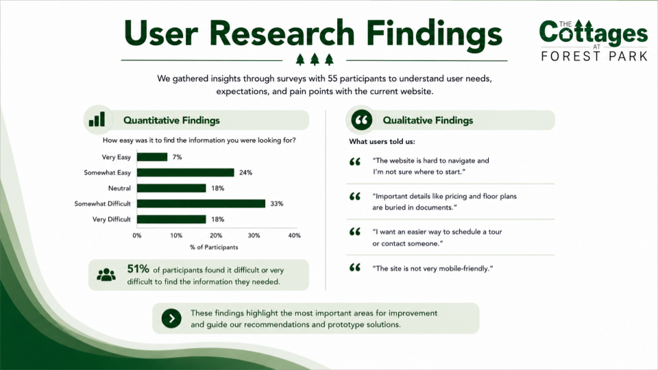
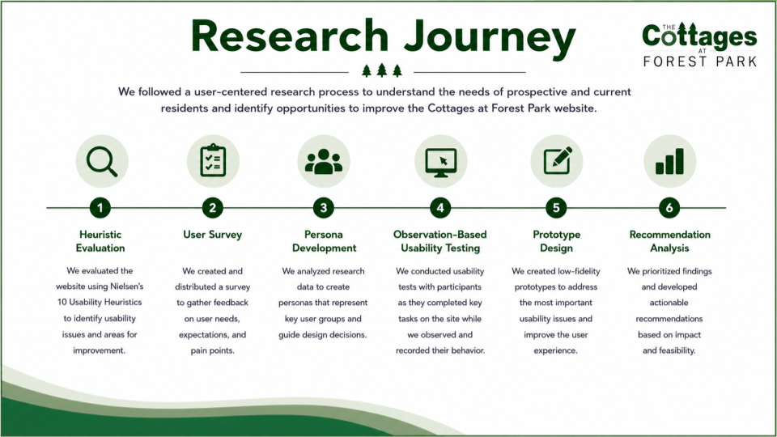
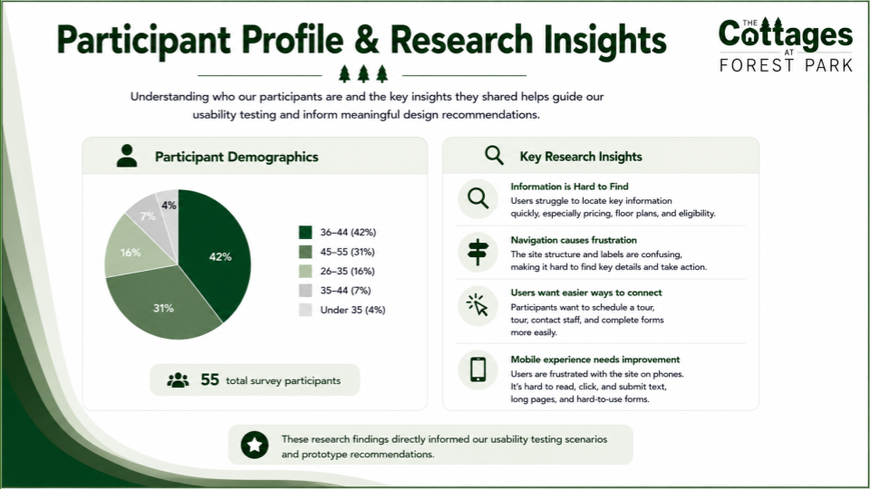
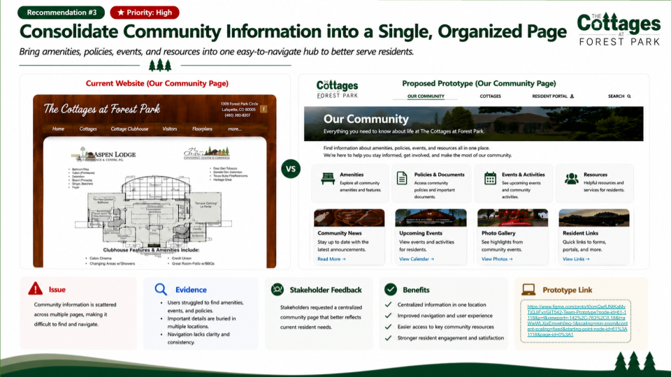
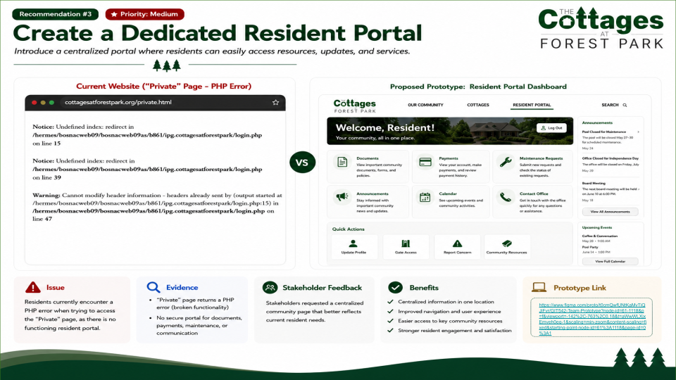

CASE STUDY: The Cottages at Forest Park
Improving the User Experience Through Research and Accessibility
Arizona State University | GIT 542 |Collaborative UX Research and Design Project

Background
The Cottages at Forest Park is a senior living community in Lafayette, Colorado. Its original website was developed primarily to market and sell homes while the community was under construction.
As construction ended and residents moved in, the website's purpose began to change. It needed to support an established residential community by providing accessible information, resident resources, and clear communication, while still welcoming prospective residents and their families.
As part of a six-person graduate team at Arizona State University, I collaborated throughout a comprehensive evaluation of the existing website. Our goal was to understand the needs of its evolving audience and recommend improvements based on user research, usability testing, and accessibility principles.
Challenge
The website had been created for a different stage in the community's development. Although it originally focused on selling homes, Forest Park now needed a website that could also serve people already living there.
The existing information architecture did not adequately support this shift. Visitors encountered confusing navigation, difficult-to-find information, and limited access to resident-focused resources. Important content was not always easy to locate or understand.
Our research reinforced these concerns. In a survey of 55 participants, 51% reported that finding the information they needed was difficult or very difficult.
Our challenge was to recommend a more intuitive and accessible experience that balanced the needs of prospective residents, current residents, and their families.

Process
I worked collaboratively with my team across the research and design process. We combined several methods to understand user needs, evaluate the existing experience, and develop recommendations.
- Heuristic evaluation: Evaluated the website using Nielsen's ten usability heuristics.
- User surveys: Gathered feedback from 55 participants about information needs and website usability.
- Persona development: Created user personas representing different visitor goals and needs.
- Usability testing: Observed participants completing tasks such as locating floor plans, finding amenities, and identifying how to schedule a tour.
- Accessibility evaluation: Considered barriers affecting readability, navigation, and access to information.
- Prototyping: Developed proposed interface improvements informed by our research findings.

The research helped us connect specific usability problems to design decisions rather than relying on visual preferences alone.

Results
Our evaluation identified recurring problems with navigation, information hierarchy, and the visibility of essential content and actions. We translated these findings into proposed improvements for the website.
The homepage prototype introduced clearer navigation, more prominent calls to action, and easier access to frequently requested information. Additional concepts explored improvements to community information and resident resources.


The final deliverables included research findings, usability recommendations, and interactive prototypes. These were proposed design solutions, not changes deployed to the live website.
This project strengthened my experience with collaborative UX research, accessibility evaluation, usability testing, and translating evidence into practical design recommendations.